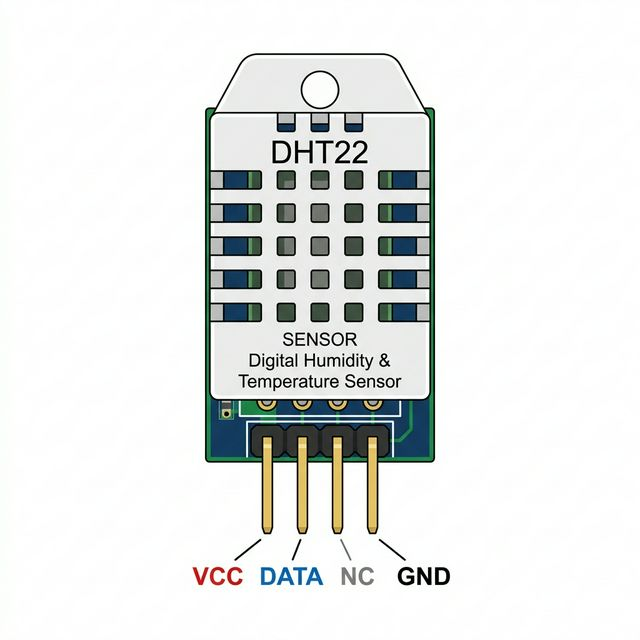

The DHT22 (AM2302) is a basic, low-cost digital temperature and humidity sensor. It uses a capacitive humidity sensor and a thermistor to measure the surrounding air, and spits out a digital signal on the data pin (no analog input pins needed).

Inside the slotted plastic casing are two specialized sensors and a small 8-bit microcontroller:
| Pin | Function |
|---|---|
| VCC | Power supply. Connect to Arduino 5V (or 3.3V). |
| DATA / SDA | Digital signal output. Connect to any digital pin. Requires a pull-up resistor in hardware (emulated internally in OpenHW Studio). |
| NC | Not Connected. Do not wire. |
| GND | Common ground connection. |
During a running simulation, a dark floating control panel with two sliders will appear beneath the DHT22 module in OpenHW Studio. Use these sliders to manually sweep the temperature and humidity values up and down. The simulated sensor will instantly feed these values to your code!
You must install the DHT sensor library by Adafruit to use this component easily.
#include "DHT.h"
// Define the pin and type
#define DHTPIN 2 // Digital pin connected to the DHT sensor
#define DHTTYPE DHT22 // DHT 22 (AM2302)
// Initialize DHT sensor module
DHT dht(DHTPIN, DHTTYPE);
void setup() {
Serial.begin(9600);
Serial.println(F("DHT22 Starting..."));
dht.begin();
}
void loop() {
// Wait a few seconds between measurements (the sensor is slow)
delay(2000);
// Read temperatures
float h = dht.readHumidity();
float t = dht.readTemperature(); // Read Temperature in Celsius
// Check if any reads failed
if (isnan(h) || isnan(t)) {
Serial.println(F("Failed to read from DHT sensor!"));
return;
}
Serial.print(F("Humidity: "));
Serial.print(h);
Serial.print(F("% Temperature: "));
Serial.print(t);
Serial.println(F("°C "));
}